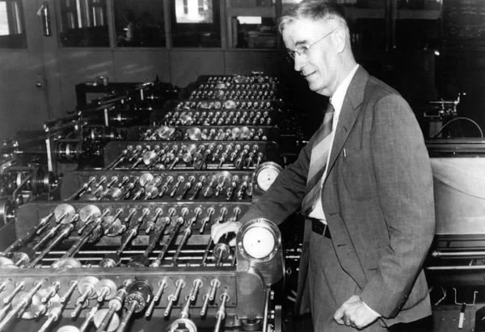

Historia
De tidigaste datorerna var inget mer än mekaniska räknemaskiner. Den första av dem var av Wilhelm Schickard
som designade och byggde den första fungerande mekaniska kalkylatorn år 1623. Efter 50 år (1673) skapade
Gottfried Leibniz en ny typ av mekanisk kalkylator som kallades Stepped reckoner. Leibniz kan anses vara den
första datavetenskap mannen eftersom många olika anledningar där en av dem är att han dokumenterade det
binära systemet.
1820 lanserades dock den första räknemaskinen som var tillräckligt pålitlig för att användas dagligen på
kontor. 1834 började Charles Babbage bygga den första programmerbara räknemaskinen, men det var först 1843
som Ada Lovelace fick den brillianta idén att programmera avancerade algoritmer till Babbage:s maskin. Det
var det första publicerade programmet för en specifik dator.
År 1854 publicerade George Boole The Laws of Thought handlade om uträkningarna om boolean algebra vilket
skapade principerna som digitala datorer bygger på. Runt år 1885 skapade Herman Hollerith Tabulatur som var
en elektrisk maskin som hjälpte sammanställde information som sparas på hålkort. År 1914 publicerade
Leonardo Torres Quevedo Essays on Automatics, vilket var inspirerade av Babbage. Det introducerade också
iden av Flyttal. Claude Shannon skrev år 1937 en magisteruppsats där han visade att Boolean algebra kan
användas för att förbättra elektromagnetiska reläer som användes i telefon routing switchar. Samma år,
hundra år efter Babbages omöjliga dröm, övertygade Howard Aiken IBM att utveckla sin gigantiska
programmerbara kalkylator, ASCC/Harvard Mark I, baserad på Babbage's Analytical Engine, som själv använde
kort och en central datorenhet. När maskinen var färdig hyllade några den som "Babbages dröm som gick i
uppfyllelse".
Under 1940 talet utvecklades starkare datorer som Atanasoff-Berry datorn och ENIAC. Det var då man började
förstå att datorn kunde användas till mer saker än bra matematik och forskningsfältet utökades. 1945 skapade
IBM Watson Scientific Computing Laboratory och år 1946 började dom erbjuda sina första datavetenskap kurser.
Nästa steg i utvecklingen blev transistorn som upptäckte på Bells telelaboratorier vilket kunde ersätta
radiorör vilket gjorde det ännu lättare att forska eftersom den var billigare. Dessutom gjorde det datorn
mycket mindre. Efter transistorn uppfanns började rymdkapplöpning vilket gjorde så att mycket pengar lades
på utveckling och på att ta fram små och billiga komponenter.
1959 upptäckte Jack Kilby och Robert Noyce helt oberoende av varandra att istället för att tillverka varje
transistor för sig kunde flera tillverkas på samma bit kisel. Därmed var den Integrerade Kretsarna födda.
Det var inte bara datorindustrin som började använda den utan även radio, tv och stereon inplanerade den nya
tekniken.
Robert Noyce lyckades få patenten på den integrerade kretsen och skapade därmed Intel 1968 en av de största
cpu företagen idag. Under 70 talet utvecklade Intel minneschippet. Vilket var en integrerad krets som kunde
spara instruktioner som den skulle utföra. Nästa stora upptäckt var när Ted Hoff presenterade
mikroprocessorn. Det var en integrerad krets, som innehöll både bearbetnings- och styrenheten i en dator.
Vilket räknas som den första CPUn.
Efter att mikroprocessorn utvecklas kom Apple 1977 ut med den första persondatorn, vilket blev ett
storföretag med en omsättning på 700 miljoner. Efter det blev IBM oroad av att vissa företag köpte
persondatorer av Apple bestämde IBM för att de skulle satsa på sin egna persondator som kom ut 1981. I och
med att IBM tog steg in persondator marknaden började persondatorns snabba utveckling som fortsätter även
idag.
Datavetenskapens historia är djup, lång och väldigt intressant men främst för påverkan den har haft och har
på vårt samhälle, eftersom vi har fortfarande inte sett konsekvenserna av den. Den har haft en så påverkad
att det är svårt att hitta dess like. Men det finns en bransch som har lika stor inflytande på vårt
samhälle. Året är 1764 James Hargreaves har precis uppfunnit Spinning Jenny, en spinnmaskin som kunde spinna
8 trådar på en gång. Hargreaves visste inte det då men hans maskin var ett av startskottet för den
industriella revolutionen. Många maskiner kommer att följa hans som kan utföra arbete mer effektivt än vad
människor kan. Hargreaves var en av de tidiga maskiningenjörerna. Den tidiga data vetenskapen och den
industriella revolutionen hade många saker gemensamt. De båda började efter många år av små vetenskapliga
framsteg. Den industriella revolutionen startade inte över en dag då det tog tid för nya tekniska
innovationer att kommas på men när man knäcker koden tog den fart. Samma sak hände med datavetenskapen som
förklarat att det krävdes många år av forskning innan potentialen kunde användas. Däremot finns det många
skillnader också, där det största är hur de påverkar vårt samhälle. Industriella revolutionen ändrades vårt
samhälle fundamentalt, bröt ett system där de flesta var bönder och gjorde dem till arbetare ofta under
brutala omständigheter. Även om data vetenskapen har haft stor påverkan har det inte än varit lika
fundamental som industriella revolutionen.
